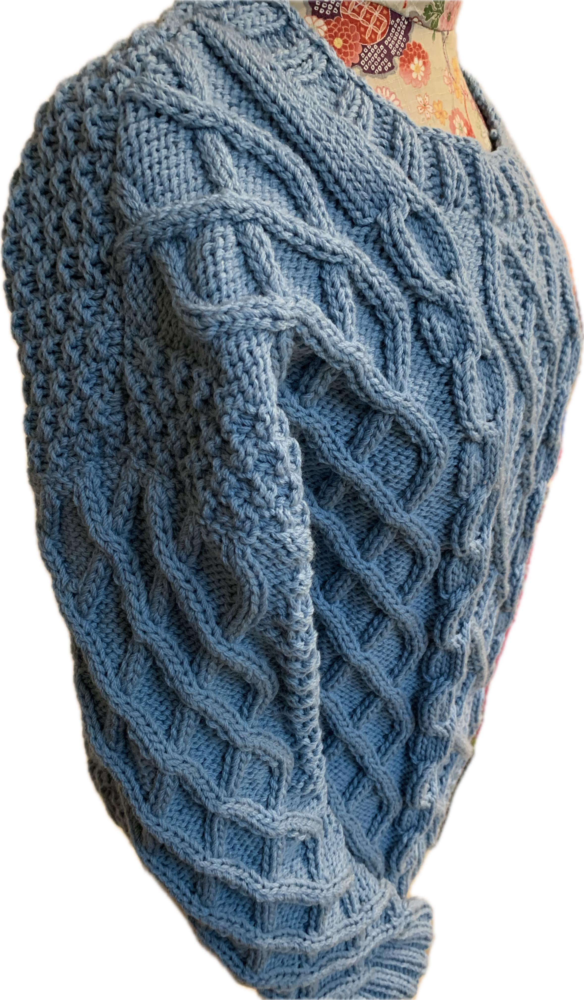
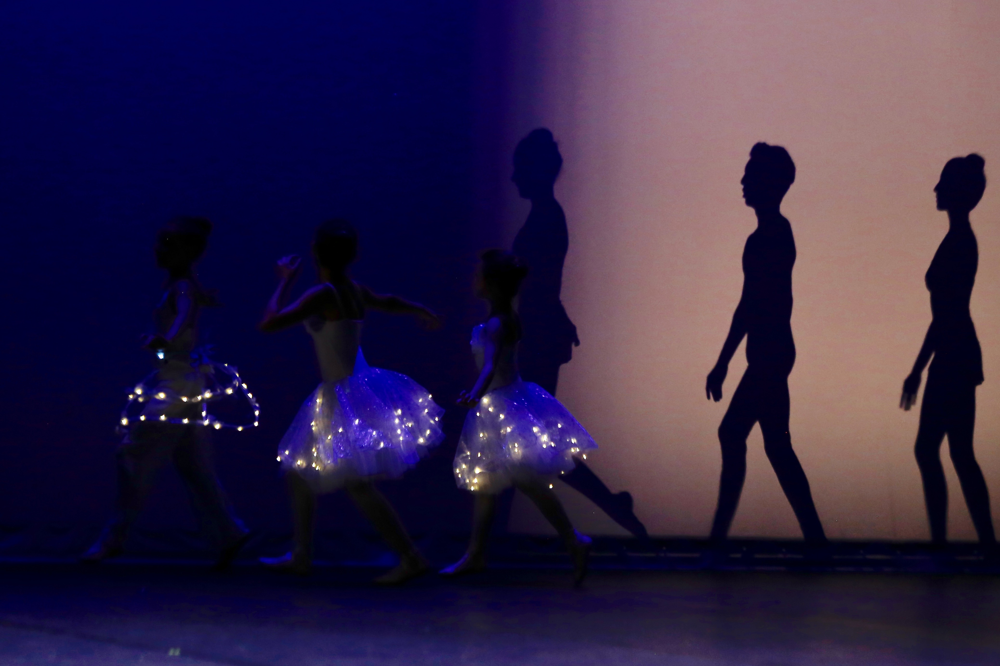
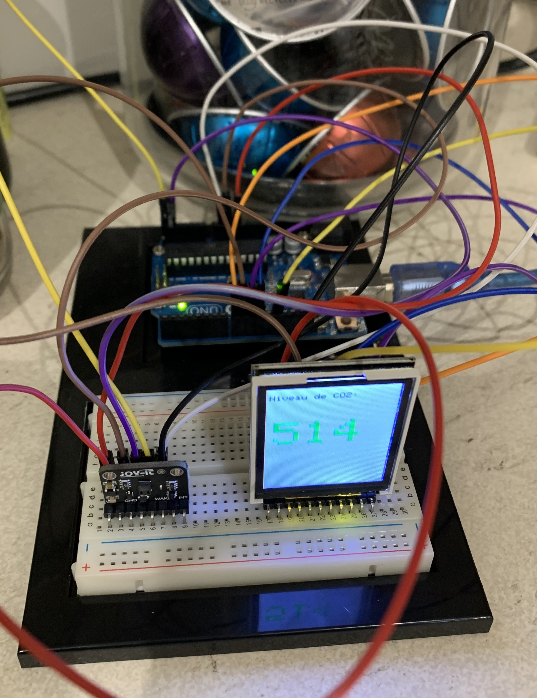

Présentation de quelques réalisations
Au travers de cette sélection de travaux, j'ai voulu vous présenter à la fois la dimension pédagogique et technique de mon travail. La réalisation de ressources numériques variées au service des apprentisssages des apprenants.
school
Développement d'une séquence pédagogique
J'enseigne la discipline "Sciences du Numérique et Technologie" depuis sa création en ... La séquence pédagogique présentée ci-dessous a été réalisée pour le chapitre sur la géolocalisation.
movie
Réalisation de ressources pédagogiques
Le travail avec différents logiciels me permet de réaliser un grande variété de ressources numériques, comme ce site web.
La séquence pédagogique
Les ressources pédagogiques numériques
Cliquez dans le Genially pour accéder aux ressources
Réalisation d'un jeu sérieux en équipe
Le travail en équipe est une dimension fondamentale de l'ingénieur pédagogique. Je suis toujours enthousiaste pour collaborer au sein d'une équipe motivée. Avec Carine Fontaine et Beverly Renault, dans le cadre du master CRN avons proposé un Visual Novel sur le cyberharcèlement à destination d'élèves de seconde, dans l'enseignement de SNT pour le chapitre sur les réseaux sociaux.
Podcast
Ecoutez le premier épisode du podcast "Les petites histoires de la biologie",
réalisé avec Audacity. L'image du podcast a été réalisée avec Adobe Photoshop.
Moteur de jeu Unity
Dans le cadre du master CRN, j'ai appris les bases du développement de jeux vidéos avec Unity afin de pouvoir prototyper des jeux sérieux.
Une infographie
Image vectorielle réalisée avec Adobe Illustrator

Cliquer sur l'image pour l'agrandir
engineering
Réalisations personnelles
En dehors de mon travail, j'aime exprimer ma créativité à travers différentes activités manuelles. Voici quelques-unes de mes réalisations.
Tricot
Depuis mon adolescence, je me suis plongé dans le tricot, avec une affection particulière pour les pulls irlandais. Chaque création porte la chaleur de ma passion et une histoire tissée avec soin.
Cartes programmables
Je réalise également divers objets basés sur la programmation de cartes programmables.
Du e-textile. La photo ci-dessous a été prise lors du gala de danse de fin d'année de l'école de danse Line Jenny Neel à Albi, en juin 2017. Les trois tutus s'éclairaient lorsque la luminosité sur scène baissaient et inversement.
J'ai réalisé un capteur de CO2 avec une carte Arduino, programmée en C++. Il affiche sur un écran la quantité de CO2 mesurée et sonne si elle dépasse le seuil limite fixé dans le programme.Très pratique pour savoir quand il faut aérer une pièce !
Cliquer sur l'image pour l'agrandir